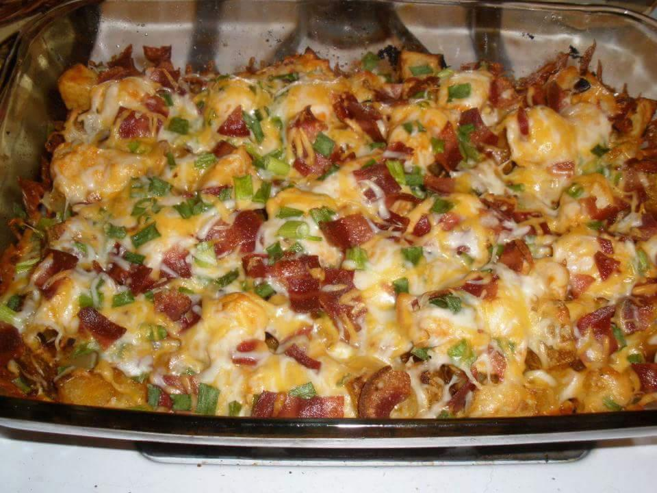

Loaded Potato and Buffalo Chicken Casserole Recipe

Description
Here you have a great combination of chicken, potatos, bacon and cheese. And as a bonus, it comes with a little kick.
Ingredients
Casserole
- 2 lb Boneless chicken breasts, cubed
- 8-10 Medium potatoes cut in 1/2" cubes
- 1/3 cup Olive oil
- 1 1/2 tsp Salt
- 1 Tbsp Black pepper
- 1 Tbsp Paprika
- 2 Tbsp Garlic powder
- 6 Tbsp Hot sauce
Toppings
- 2 cups Fiesta blend cheese
- 1 cup Crumbled bacon
- 1 cup Diced green onion
Steps
- Preheat oven to 500 degrees. Spray a 9X13" baking dish with cooking spray. In a large bowl mix together the olive oil, salt, pepper, paprika, garlic powder and hot sauce.
- Add the cubed potatoes and stir to coat. Carefully scoop the potatoes into the prepared baking dish, leaving behind as much of the olive oil/hot sauce mixture as possible.
- Bake the potatoes for 45-50 minutes, stirring every 10-15 minutes, until cooked through and crispy and browned on the outside.
- While the potatoes are cooking, add the cubed chicken to the bowl with the left over olive oil/hot sauce mixture and stir to coat.
- Once the potatoes are fully cooked, remove from the oven and lower the oven temperature to 400 degrees. Top the cooked potatoes with the raw marinated chicken.
- In a bowl ix together the cheese, bacon and green onion and top the raw chicken with the cheese mixture.
- Return the casserole to the oven and bake for 15 minutes or until chicken is cooked through and the topping is bubbly delicious.
- Serve with ranch dressing.